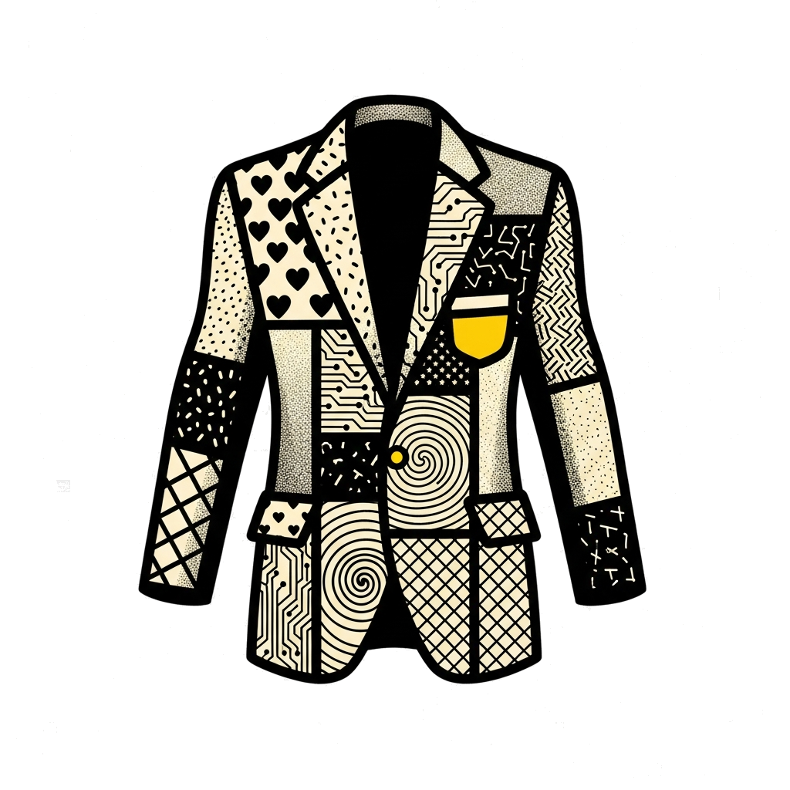
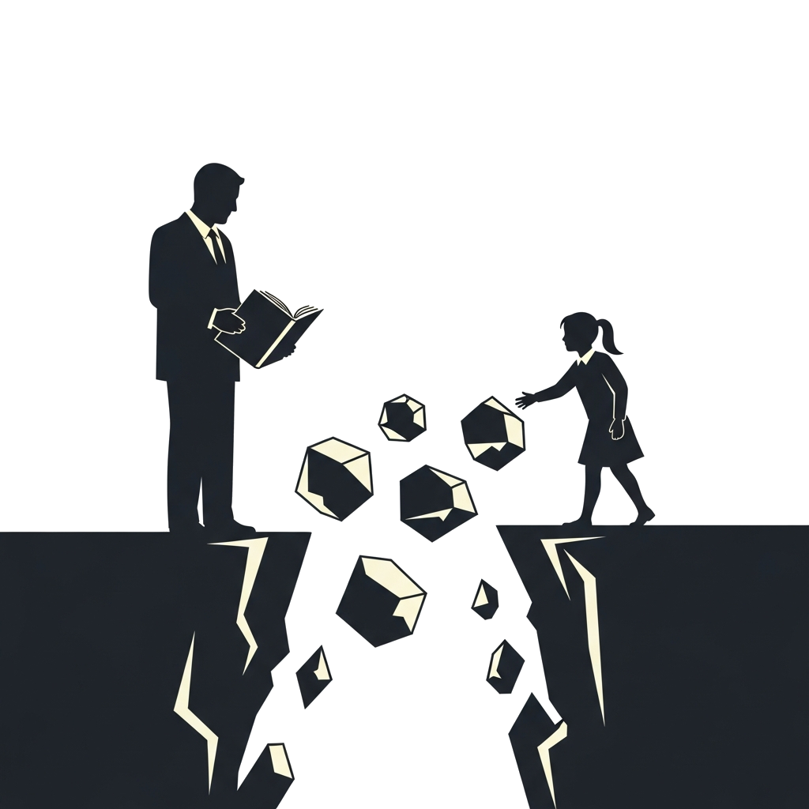
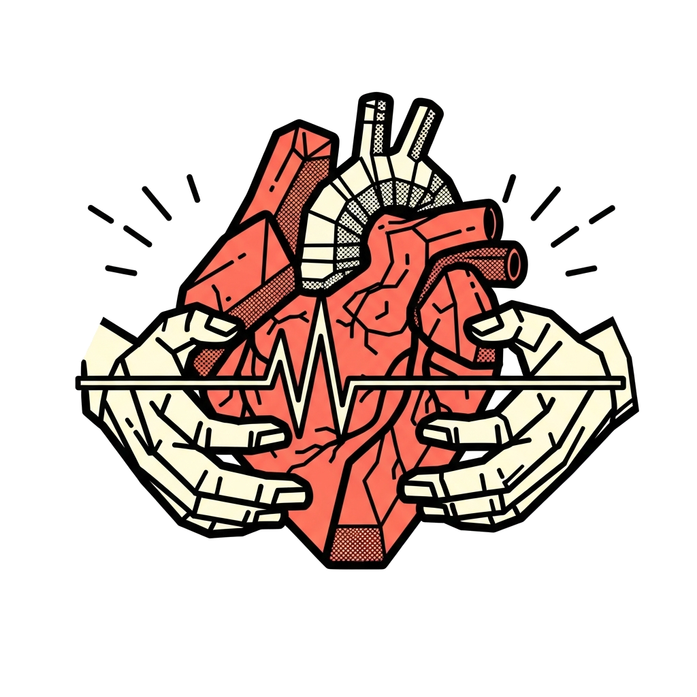
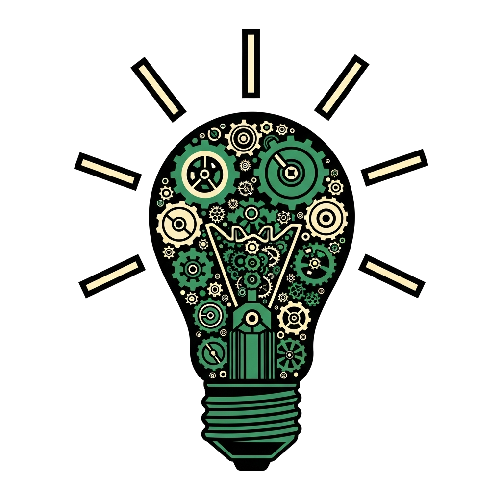
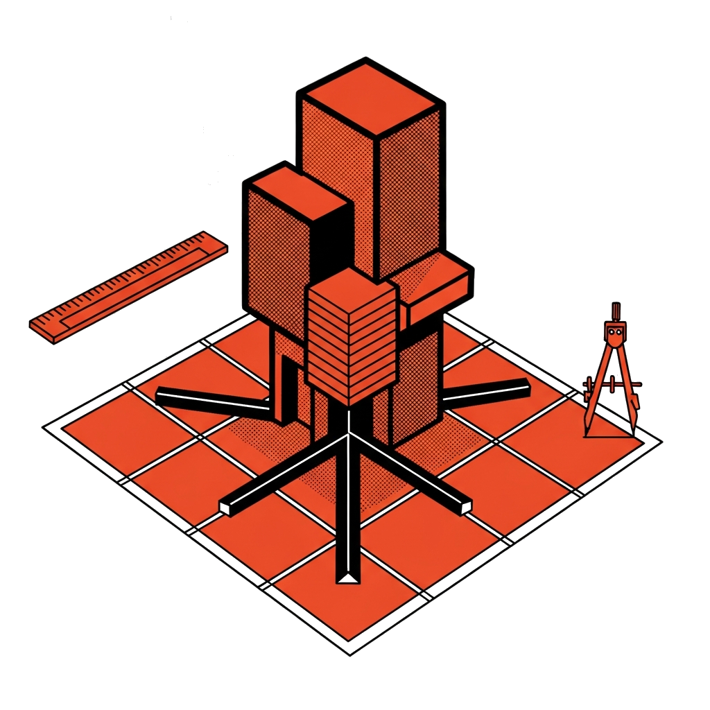

Las Grandes Ideas y las Habilidades del Docente del Siglo XXI

Las Grandes Ideas (Big Ideas) son los conceptos centrales y duraderos de una disciplina, ideas poderosas que ayudan a organizar el conocimiento y permiten que los estudiantes comprendan profundamente un tema, en lugar de memorizar contenidos aislados.
↓Lo que para el profesor es obvio, para el estudiante suele ser abstracto, confuso o irrelevante. Las Grandes Ideas, los principios que organizan el conocimiento y le dan sentido, no se transmiten por repeticion ni por simplificacion.
Por eso hablamos del "nuevo traje del profesor": ya no basta con transmitir informacion. El docente necesita desarrollar nuevas habilidades que le permitan traducir las grandes ideas en experiencias comprensibles, relevantes y humanas para los estudiantes.
Ya no basta con transmitir información. El docente necesita nuevas habilidades, un nuevo traje, que le permita hacer visible lo invisible, conectar con sus estudiantes y mantenerse en constante evolución.
Este traje tiene cuatro piezas: el corazón que conecta (competencias socioemocionales), los hilos que tejen puentes (tecnología), la tela que se renueva (innovación pedagógica), y el patrón que da forma (diseño instruccional).
Un traje no se viste por partes. Estas cuatro habilidades forman un todo integrado: el traje nuevo del profesor.

El corazon del traje: sin empatia, el traje es cascara vacia.
La empatía permite comprender las emociones de los estudiantes y crear ambientes seguros donde el aprendizaje cobra vida.
La empatia permite comprender las emociones, intereses y necesidades de los estudiantes. Estas capacidades permiten crear ambientes de aprendizaje seguros, inclusivos y respetuosos, donde los estudiantes se sientan motivados y valorados.
El docente no solo ensena contenidos, sino que tambien influye en la formacion integral de los estudiantes. Sin esta conexion emocional, el traje es una cascara vacia: un docente puede dominar la tecnologia y las metodologias mas innovadoras, pero si no conecta emocionalmente con sus estudiantes, las grandes ideas seguiran siendo abstractas e inalcanzables.
No se aprende de un libro, se construye en la práctica diaria del aula.
A traves de talleres de inteligencia emocional, practicas de escucha activa en el aula, ejercicios de autorreflexion sobre los propios sesgos y disparadores emocionales, y el modelado explicito de empatia en la interaccion cotidiana con los estudiantes.
Toda habilidad valiosa tiene un lado difícil. Conocerlo es parte de dominarla.
El vinculo emocional cercano puede dificultar la evaluacion objetiva y generar favoritismo percibido. El desgaste emocional (burnout) es un riesgo real cuando el docente absorbe las cargas emocionales de los estudiantes sin establecer limites saludables. Ademas, en grupos grandes, atender las necesidades socioemocionales individuales puede resultar abrumador.
Fragmentos de reportes internacionales que fundamentan la importancia de esta competencia.
"Cuando los docentes aprenden a reconocer sus propios disparadores emocionales, sesgos cognitivos y fortalezas profesionales, obtienen claridad sobre cómo los estados personales influyen en las decisiones en el aula. La investigación demuestra que la conciencia de sí mismo mejorada, y la empatía que promueve, puede mitigar el sesgo inconsciente y mejorar los resultados de los estudiantes."
"La pedagogía debe organizarse en torno a los principios de cooperación, colaboración y solidaridad. Debe fomentar las capacidades intelectuales, sociales y morales de los estudiantes para trabajar juntos y transformar el mundo con empatía y compasión."
La empatia no es un accesorio del traje, es su corazon. Sin conexion emocional, ninguna metodologia ni tecnologia puede hacer que las grandes ideas cobren vida.

Los hilos digitales: la tecnologia teje puentes entre lo abstracto y lo concreto.
La tecnología puede hacer visibles y concretas las grandes ideas que de otro modo quedan en lo abstracto.
La tecnologia puede ayudar al profesor a hacer visibles y concretas las grandes ideas. Muchos temas implican conceptos abstractos que pueden resultar dificiles de comprender si solo se presentan de forma teorica. Para que los estudiantes se involucren realmente con el aprendizaje, primero necesitan entender por que ese conocimiento es relevante para ellos y como se conecta con situaciones reales.
Podemos apoyarnos en simulaciones que permiten experimentar con fenomenos complejos, visualizaciones que ayudan a representar procesos no visibles a simple vista, y proyectos practicos donde los estudiantes aplican lo aprendido para resolver problemas concretos.
De esta manera transformamos momentos tradicionalmente pasivos de la clase en experiencias de aprendizaje activas, donde los estudiantes participan, experimentan y reflexionan. Estas actividades tambien generan oportunidades para evaluar el aprendizaje en contextos reales, observando como los estudiantes aplican sus conocimientos y habilidades.
Se aprende experimentando con herramientas reales, no leyendo manuales.
Experimentando con herramientas digitales en contextos reales de aula, colaborando con otros docentes y desarrolladores EdTech, y evaluando criticamente que tecnologia realmente mejora la comprension y cual solo distrae. La clave es integrar la herramienta al objetivo pedagogico, no al reves.
El acceso desigual y el uso sin intención pedagógica son riesgos que todo docente debe anticipar.
El acceso desigual a infraestructura digital genera brechas entre escuelas y regiones. La tecnologia puede convertirse en distraccion cuando se usa sin intencion pedagogica clara. Existe tambien el riesgo de que el docente dependa de la herramienta y pierda la capacidad de ensenar sin ella, o que la presion institucional por "innovar" lleve a adoptar tecnologia por moda y no por necesidad real.
Fragmentos de reportes internacionales que fundamentan la importancia de esta competencia.
"Apoyar a los docentes en la experimentación de prácticas, colaboración con investigadores y desarrolladores de EdTech, y aprovechar la experiencia de pares puede ayudar a cerrar la brecha entre la visión y la práctica en el aula."
"Las competencias fundamentales incluyen habilidades cognitivas y metacognitivas (como alfabetización, numeracía y alfabetización digital/de datos)… Estas competencias no pueden desarrollarse simplemente sentándose en el aula, sino que requieren participación activa y significativa con el mundo."
La tecnologia no es el traje, son los hilos que lo tejen. Su valor no esta en la herramienta, sino en los puentes que permite construir entre las grandes ideas y la experiencia del estudiante.
La tela que se renueva: la practica reflexiva mantiene al docente vigente.
La formación constante y la reflexión sobre la práctica mantienen al docente vigente y relevante.
Mantener una formacion constante, investigacion y reflexion sobre la practica docente, ser flexible y disenar proyectos innovadores. El docente debe ser capaz de planificar, desarrollar y evaluar procesos de ensenanza y aprendizaje.
Esto implica el dominio de estrategias de ensenanza y aprendizaje, incluyendo la planificacion, el diseno de actividades didacticas, la aplicacion de metodologias y la evaluacion. La tela del traje no es estatica: se renueva, se adapta, se transforma. El docente del siglo XXI no termina de formarse nunca, y esa es precisamente su fortaleza.
Se construye en comunidades de práctica, diarios reflexivos e investigación-acción.
Participando en comunidades de practica donde los docentes comparten experiencias y retroalimentacion, llevando diarios reflexivos sobre lo que funciona y lo que no en el aula, realizando investigacion-accion sobre problemas concretos de su contexto, y participando en redes de formacion continua tanto presenciales como virtuales.
La sobrecarga laboral y las estructuras rígidas pueden frenar incluso la mejor intención de innovar.
La sobrecarga laboral y administrativa limita seriamente el tiempo disponible para la reflexion y la formacion. Las estructuras institucionales rigidas pueden frenar la innovacion individual al imponer curriculos y formatos inflexibles. Tambien existe la tension entre innovar por conviccion y hacerlo por presion externa, lo que puede generar cambios superficiales sin impacto real.
Fragmentos de reportes internacionales que fundamentan la importancia de esta competencia.
"La enseñanza se entiende como un viaje de descubrimiento de por vida, en el cual la práctica reflexiva y el aprendizaje continuo impulsan a los docentes a enfrentar nuevos desafíos y aprovechar las oportunidades emergentes."
"La enseñanza debe profesionalizarse aún más como un esfuerzo de colaboración en el que los docentes son reconocidos por su trabajo como generadores de conocimiento y figuras clave en la transformación educativa y social."
La innovacion no es adoptar la ultima moda, es la practica reflexiva que mantiene al docente vigente. La formacion continua no es un requisito burocratico; es la tela que se renueva cada dia.

El patron del traje: sin un buen diseno, la tela mas fina se vuelve un trapo.
El docente que enseña para la comprensión transforma objetivos en preguntas esenciales que guían al estudiante.
El patron es el molde que da forma al traje. El docente que ensena para la comprension no transmite contenido, transforma objetivos curriculares en preguntas esenciales que orientan la investigacion del estudiante y hacen las grandes ideas creibles y vitales.
Hacer las ideas "creibles y hacerlas parecer vital" no es solo un reto intelectual; es un reto de diseno. El docente como co-disenador del aprendizaje y experto adaptativo debe saber convertir la complejidad disciplinar en experiencias de aprendizaje que provoquen comprension profunda.
Se aprende diseñando hacia atrás: partir de la comprensión deseada y construir desde ahí.
Formulando preguntas esenciales a partir de los contenidos curriculares, disenando evaluaciones autenticas que midan comprension real (no solo memorizacion), y alineando cada actividad con objetivos claros de comprension profunda. Tambien implica aprender a usar el diseno inverso: partir de lo que el estudiante debe comprender al final y disenar hacia atras.
Los currículos rígidos y las evaluaciones estandarizadas limitan el espacio para el diseño auténtico.
Los curriculos rigidos y las evaluaciones estandarizadas dejan poco espacio para preguntas esenciales y evaluaciones autenticas. Disenar para la comprension profunda requiere significativamente mas tiempo de preparacion que simplemente cubrir contenido. Ademas, los docentes pueden enfrentar resistencia institucional cuando sus disenos no se ajustan a los formatos tradicionales de planeacion.
Fragmentos de reportes internacionales que fundamentan la importancia de esta competencia.
"El docente del siglo XXI es un co-diseñador del aprendizaje y un experto adaptativo. La capacidad de diseñar experiencias de aprendizaje que conecten los contenidos disciplinares con las preguntas esenciales del estudiante es la competencia central del profesional educativo."
"Los currículos deben reimaginarse como espacios de indagación, donde los contenidos se transforman en preguntas que invitan a la exploración. El diseño instruccional centrado en la comprensión profunda permite que el estudiante no solo aprenda, sino que aprenda a aprender."
El patron es lo que transforma la tela en traje. Sin diseno instruccional intencional, los mejores contenidos se quedan en informacion suelta que el estudiante no puede ensamblar en comprension.
